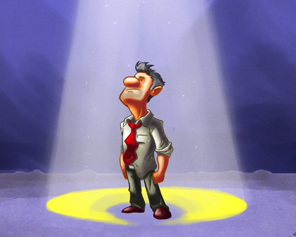

April 29, 2010, 8:30 pm
#
Cool sms replacement
The guy behind recent Twitter purchase <a href="http://gizmodo.com/5513918/twitter-buys-tweetie-best-twitter-app-for-the-iphone-goes-free">Tweetie</a>, along with the dude behind <a href="http://itunes.apple.com/us/app/borange-social-availability/id297643026?mt=8">Borange</a>, have put together a characteristically pretty SMS replacement app called Textie. There are two things you should know about it: It’s free, and it works. <a href="http://gizmodo.com/5527649/textie-for-iphone-stop-texting-until-youve-tried-it" title="Click here to read more about Textie for iPhone: Stop Texting Until Youve Tried It [IPhone Apps]">More »</a>
(Via Gizmodo.)
April 29, 2010, 6:39 pm
#
Everyday People Making Thousands as Amateur Paparazzi
April 29, 2010, 6:36 pm
#
North Carolina beach town bans thongs
Say what? Added to places I won’t go visit…
North Carolina beach town bans thongs: “If you plan on going to Kure Beach, North Carolina, bring your sunscreen and shades, but please leave your thong behind.
April 29, 2010, 10:27 am
#
Video: BlackBerry 6 Preview From WES
April 28, 2010, 5:50 am
#
I'm speaking at the University of Texas tomorrow.
The University of Texas has a program called 3 Day Startup which puts students in an office for 3 days and gives them all the materials they need to start a company. They choose the most promising idea and try to get it off the ground. If the project is successful, the company continues to grow after the 3 days. Either way, its great experience for the students and encourages a lot of great ideas. The program organized a series of guest speakers including Brett Hurt CEO of Bazzarvoice, Joshua Baer CEO of Otherinbox. I’m the last of the speakers to go and I’m going to be talking about my experiences both successes and more importantly failures. I’m also going to talk about why I love what I do and what I see for myself in the future. There will be some Q&A (probably a lot of it.)

I was a UT computer science student in the early 90’s and I haven’t been back to the computer science campus since I graduated. So this will be a bit of a homecoming for me. I’m reminded of when I was a marketing student and in my junior year decided I wanted to change my major to computer science. My advisor told me that I was unfit to be a computer science student and I should just stay the course. I argued and she unwillingly let me into the program. Little did she know that I would thrive in the program and go on to greater success. Tomorrow should be fun.
April 27, 2010, 11:54 pm
#
I almost invented Napster.
I almost invented Napster. I was in the right space at the right time, but when it was all said and done, I missed the opportunity. People often say “think outside the box” but inventing a new disruptive technology takes a lot more than expanding your thinking. Often times, something as simple as your own feelings can get in the way, and I call that emotional interference.
In the mid nineties while I was still at the University of Texas studying computer science, I founded Deadabase (www.deadabase.com,) a website that distributed MP3 tracks of Grateful Dead shows. This was right about the time that MP3’s were invented and I saw this new portable format of digital music as the perfect mechanism for large scale music distribution.
My partner Alexander Bibighuas also at the University of Texas at that time joined forces with me and Deadabase quickly took off. (Years later we would co-found Zosh together.) Within the first month we had over 30,000 downloads and our bill for bandwidth was quickly approaching $6,000. Since we were both poor college students, we decided to throw up some Double Click ad banners to help offset the expenses of running the site. At the end of the next month, we turned a small profit.

Our goal for this project wasn’t to make money, it was more of a hobby. We enjoyed spreading the music and loved the feedback we received from fans who had been searching for copies of their favorite shows and found them on Deadabase.
Deadabase began to get famous, our traffic was up and we nailed some big press pieces on CNN and the New Times and then one lousy Monday morning received a cease and desist letter from a law firm representing the Grateful Dead. They said we were violating their copyright by distributing copies of their shows.
The Grateful Dead has long allowed fans to record their concerts onto tapes and trade those tapes. All we did was encode those tapes into MP3 and give them away for free. How could we be violating their copyright? This was all new legal territory and the lawyer representing the Grateful Dead was dead set to make a name for himself.
We hired counsel of our own and fought them. In the end, they decided to allow us to continue to distribute the music, but we couldn’t generate any revenues. Not even as a not for profit company.
So here is the dilemma: How do we distribute hundred of thousands of MP3’s without incurring massive bandwidth bills? The answer was Napster and then peer to peer networking, but those weren’t around at the time. Alexander and I spent hours working on this problem. We didn’t want to see Deadabase disappear, we had worked too long and hard on it.
All of our solutions revolved around our website. That was the box that I couldn’t think outside of. We came up with idea of scheduled download slots where fans would get a specific time that they could download their show, and few others that all revolved around distribution from our website.
Looking back on those days, I realized that it my our passion for what we had been doing that prevented me from getting outside the box. I became emotionally attached to the brand and the site we built and it became too difficult to think beyond that.
It was only a year two later that Napster came around and when it did, it became apparent to me on why I failed to invent Napster. This was one of the greatest lessons that I’ve learned in business.

You have to be able to separate your feelings from the logic of doing business. Don’t let yourself get too attached to the parts of your business that become special to you. For me it was the user interaction that the Deadabase website provided to users. Letting them leave feedback on shows and rate their favorite songs was fun. If I had separated my feelings from the equation, I would’ve seen that the core of what we were doing was digital media distribution. I would’ve been able to get away from the central website distribution model and come up with an alternative, maybe even Napster or peer to peer file sharing.
The irony about the whole situation is that while we couldn’t figure out a way to save Deadabase, we did pitch to the Grateful Dead organization a music portal that would’ve put them at the forefront of digital music distribution and made them a ton of cash. They too were emotionally attached to the old way to selling music and missed out on what would’ve been a huge opportunity.
The point of this article, don’t let emotional interference get in the way of your next big idea.
April 29, 2010, 7:30 pm
#
Cool sms replacement
The guy behind recent Twitter purchase
Tweetie, along with the dude behind
Borange, have put together a characteristically pretty SMS replacement app called Textie. There are two things you should know about it: It’s free, and it works.
More »
(Via Gizmodo.)
April 29, 2010, 5:39 pm
#
Everyday People Making Thousands as Amateur Paparazzi
April 29, 2010, 5:36 pm
#
North Carolina beach town bans thongs
Say what? Added to places I won’t go visit…
North Carolina beach town bans thongs: “If you plan on going to Kure Beach, North Carolina, bring your sunscreen and shades, but please leave your thong behind.
April 29, 2010, 9:27 am
#
Video: BlackBerry 6 Preview From WES
This could be the worst user interface demonstration that I’ve ever seen. I couldn’t be more annoyed by it.
April 28, 2010, 4:50 am
#
I'm speaking at the University of Texas tomorrow.
The University of Texas has a program called 3 Day Startup which puts students in an office for 3 days and gives them all the materials they need to start a company. They choose the most promising idea and try to get it off the ground. If the project is successful, the company continues to grow after the 3 days. Either way, its great experience for the students and encourages a lot of great ideas. The program organized a series of guest speakers including Brett Hurt CEO of Bazzarvoice, Joshua Baer CEO of Otherinbox. I’m the last of the speakers to go and I’m going to be talking about my experiences both successes and more importantly failures. I’m also going to talk about why I love what I do and what I see for myself in the future. There will be some Q&A (probably a lot of it.)
I was a UT computer science student in the early 90’s and I haven’t been back to the computer science campus since I graduated. So this will be a bit of a homecoming for me. I’m reminded of when I was a marketing student and in my junior year decided I wanted to change my major to computer science. My advisor told me that I was unfit to be a computer science student and I should just stay the course. I argued and she unwillingly let me into the program. Little did she know that I would thrive in the program and go on to greater success. Tomorrow should be fun.
April 27, 2010, 11:14 pm
#
A Zosh customer left this review last month and I just had to post it. I like how he drank and beer and remained calm. Way to go Mike!
April 27, 2010, 10:54 pm
#
I almost invented Napster.
I almost invented Napster. I was in the right space at the right time, but when it was all said and done, I missed the opportunity. People often say “think outside the box” but inventing a new disruptive technology takes a lot more than expanding your thinking. Often times, something as simple as your own feelings can get in the way, and I call that emotional interference.
In the mid nineties while I was still at the University of Texas studying computer science, I founded Deadabase (www.deadabase.com,) a website that distributed MP3 tracks of Grateful Dead shows. This was right about the time that MP3’s were invented and I saw this new portable format of digital music as the perfect mechanism for large scale music distribution.
My partner Alexander Bibighuas also at the University of Texas at that time joined forces with me and Deadabase quickly took off. (Years later we would co-found Zosh together.) Within the first month we had over 30,000 downloads and our bill for bandwidth was quickly approaching $6,000. Since we were both poor college students, we decided to throw up some Double Click ad banners to help offset the expenses of running the site. At the end of the next month, we turned a small profit.
Our goal for this project wasn’t to make money, it was more of a hobby. We enjoyed spreading the music and loved the feedback we received from fans who had been searching for copies of their favorite shows and found them on Deadabase.
Deadabase began to get famous, our traffic was up and we nailed some big press pieces on CNN and the New Times and then one lousy Monday morning received a cease and desist letter from a law firm representing the Grateful Dead. They said we were violating their copyright by distributing copies of their shows.
The Grateful Dead has long allowed fans to record their concerts onto tapes and trade those tapes. All we did was encode those tapes into MP3 and give them away for free. How could we be violating their copyright? This was all new legal territory and the lawyer representing the Grateful Dead was dead set to make a name for himself.
We hired counsel of our own and fought them. In the end, they decided to allow us to continue to distribute the music, but we couldn’t generate any revenues. Not even as a not for profit company.
So here is the dilemma: How do we distribute hundred of thousands of MP3’s without incurring massive bandwidth bills? The answer was Napster and then peer to peer networking, but those weren’t around at the time. Alexander and I spent hours working on this problem. We didn’t want to see Deadabase disappear, we had worked too long and hard on it.
All of our solutions revolved around our website. That was the box that I couldn’t think outside of. We came up with idea of scheduled download slots where fans would get a specific time that they could download their show, and few others that all revolved around distribution from our website.
Looking back on those days, I realized that it my our passion for what we had been doing that prevented me from getting outside the box. I became emotionally attached to the brand and the site we built and it became too difficult to think beyond that.
It was only a year two later that Napster came around and when it did, it became apparent to me on why I failed to invent Napster. This was one of the greatest lessons that I’ve learned in business.
You have to be able to separate your feelings from the logic of doing business. Don’t let yourself get too attached to the parts of your business that become special to you. For me it was the user interaction that the Deadabase website provided to users. Letting them leave feedback on shows and rate their favorite songs was fun. If I had separated my feelings from the equation, I would’ve seen that the core of what we were doing was digital media distribution. I would’ve been able to get away from the central website distribution model and come up with an alternative, maybe even Napster or peer to peer file sharing.
The irony about the whole situation is that while we couldn’t figure out a way to save Deadabase, we did pitch to the Grateful Dead organization a music portal that would’ve put them at the forefront of digital music distribution and made them a ton of cash. They too were emotionally attached to the old way to selling music and missed out on what would’ve been a huge opportunity.
The point of this article, don’t let emotional interference get in the way of your next big idea.
April 27, 2010, 10:22 pm
#
mrgan:
The Internet’s most beloved truck is back with a fresh coat of paint and a whole new, sporty engine.
Get it at panic.com!
April 21, 2010, 1:48 am
#

mrgan:
We’ve posted a thrilling new wallpaper at http://theincidentapp.com, painted by my brother Vanja Mrgan.
Boy am I printing a poster of that.